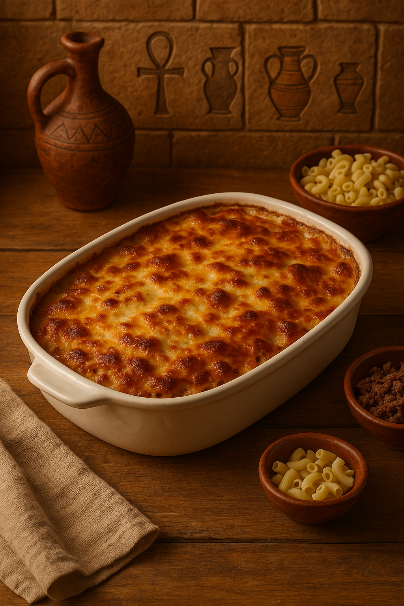

Layered Macaroni with Creamy Bechamel
This classic Egyptian dish is made of layers of macaroni, spiced ground beef, and creamy béchamel sauce, baked until golden and bubbly. A family favorite!
Ingredients:
- 500g macaroni (penne or elbow)
- 400g minced beef
- 1 onion (finely chopped)
- Salt, pepper, cinnamon, nutmeg
- 3 tablespoons butter
- 3 tablespoons flour
- 3 cups milk (warm)
- 1 egg (optional, for extra richness)
Instructions:
- Boil pasta until just tender. Drain and set aside.
- Sauté onion, add minced beef, season well, and cook until browned.
- In a saucepan, melt butter, add flour, stir for 1 minute. Gradually add milk while stirring to make béchamel. Cook until thickened.
- In a baking dish, layer half the pasta, add the meat, then the rest of the pasta. Pour béchamel sauce over the top evenly.
- Optional: Beat 1 egg and mix with the béchamel before pouring for a firmer top.
- Bake at 180°C (350°F) for 30–40 minutes until top is golden.